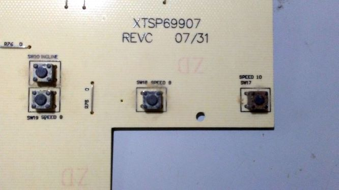

This project replaces the user interface console of a treadmill that uses the MC-2100 motor control board, which is a popular control board used by many different brands of treadmills.
It uses an Arduino board, or at least an an AVR microcontroller, plus some simple hardware which will be documented below.
I have a 30827 NordicTrack A2105 treadmill for which the user interface console had become increasingly unreliable. The liquid crytal display was not working, and some of the buttons had stopped working as well. Eventually, it started running at a really fast speed as soon as it was turned on and could not be slowed down. I disasenbled the console and the culprit was found to be corrosion (probably from sweat) on the momentary switch behind the 10 mph button.

I decided to replace the user interface panel with a simple Arduino-based solution, basically just a pair of buttons for faster and slower.
The documentation for the treadmill indicated that it used an MC-2100 motor control board. Schoolie and Terry provided some info on the MC-2100 and some circuits on how to drive it, not as a treadmill, but repurposed as a lath or other motor controller, and not using a mocrocontroller, but a 555 timer chip to generate the pulse width modulation output. But they did have the helpful information that the PWM output (connected to blue wire of MC2100) wants a 50ms period, and 0 to 85% duty cycle. Also, the 5V output by the microcontroller to drive the PWM needs a current-limiting resistor of about 1K.